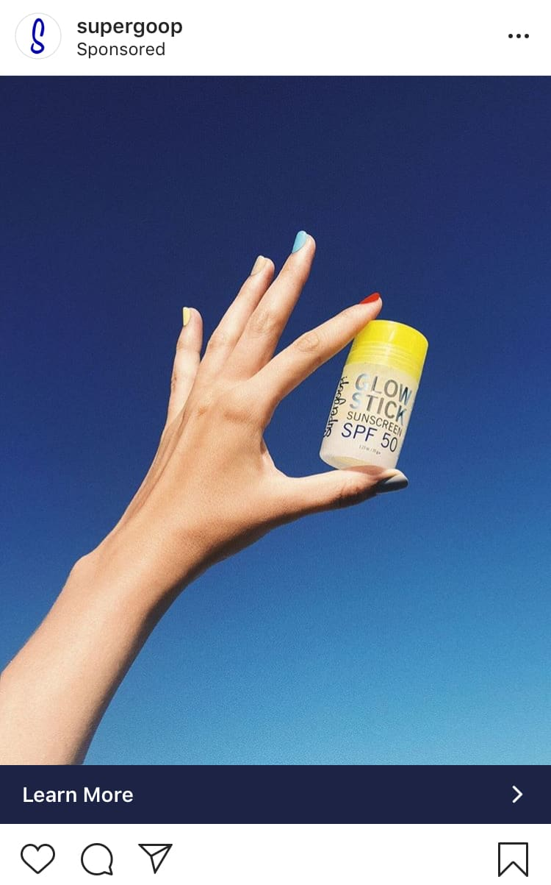
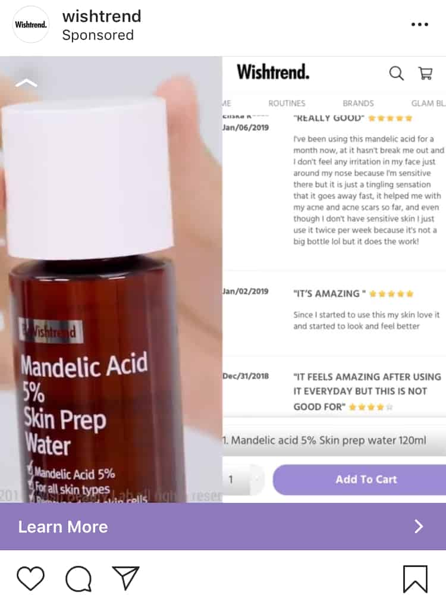
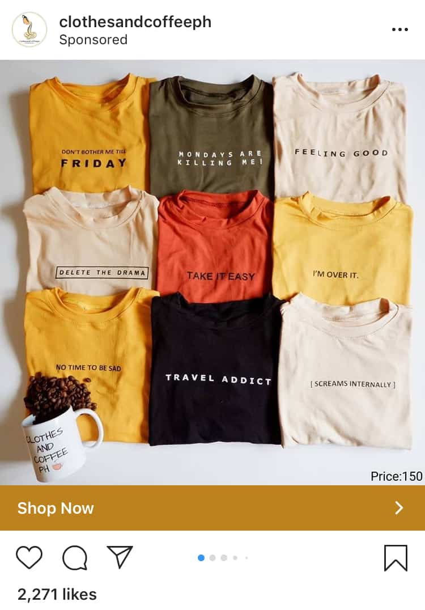
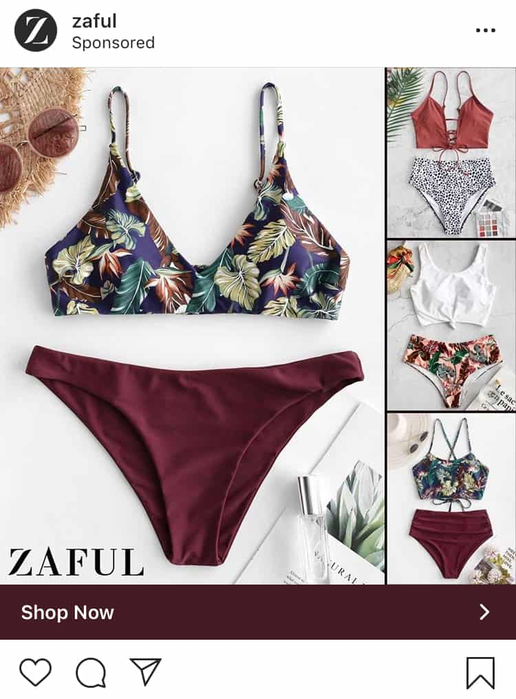
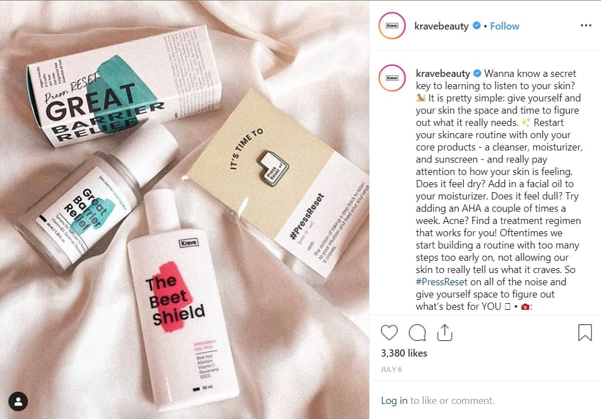
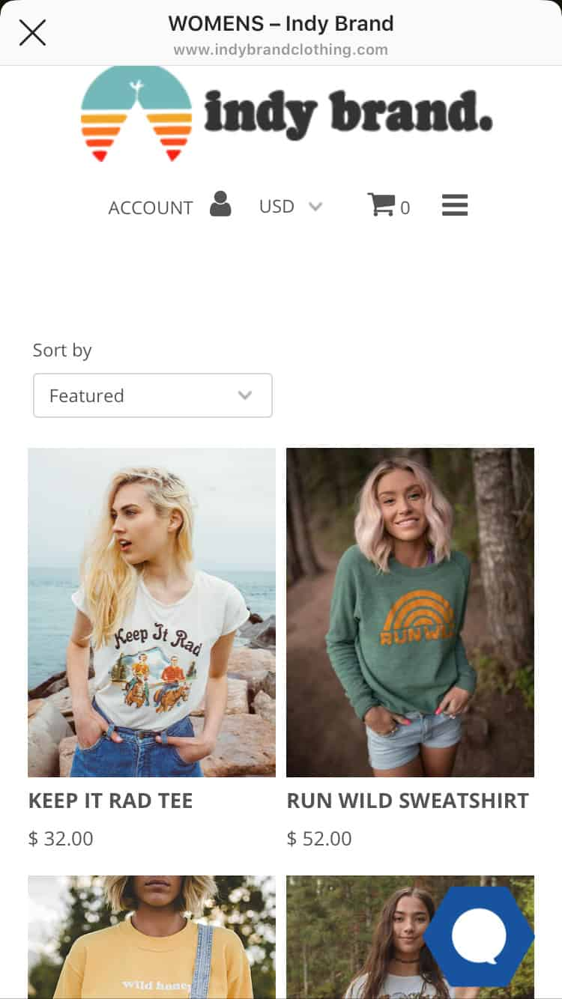
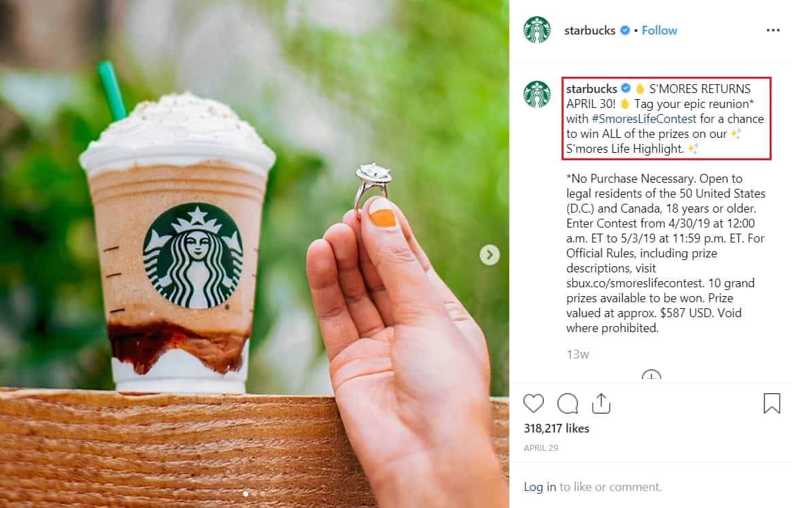

To reach a wider market and boost brand awareness, you need to be on Instagram. With more than one billion users, it’s a no brainer. And leveraging on Instagram ads is one of the best marketing strategies today.
Instagram is an awesome platform for visual content. Therefore, Instagram sponsored ads are highly effective in attracting a new audience. In fact, according to a recent study, 83% of users say they discover products and services on Instagram. It offers brands plenty of opportunities to reach their market.
However, you can’t simply take your existing campaign and put them on the platform. It requires a lot of thought.
That’s why we’ve come up with a quick guide for creating Instagram ads and how much it costs. Plus we’ve listed a few key Instagram ads strategies that convert!
But First, Does Instagram Ads Really Work?
Advertising on Instagram means paying to post sponsored content. This allows your business to reach a wider and more targeted market.
Some of the reasons why brands pay for Instagram sponsored ads include:
- Grow brand awareness
- Increase website traffic
- Generate new leads
- Convert following to sales
The best part of Instagram ads is that they work. According to a study, 80% of users say Instagram helps them decide whether to buy a product or not. Additionally, 75% of users take action after seeing an ad.
Because of this high success rate, Instagram now has more than 2 million monthly advertisers. Users see Instagram sponsored ads every three or four posts. Aside from the feed, brands can also advertise through Stories.
Need More Reasons To Pay For Instagram Sponsored Ads?
Wide Demographics
In recent years, Instagram’s monthly active users continue to rise. For this reason, there’s a high chance that your target audience is on the platform too!
According to Statista 2019, 71% of the active Instagram users are younger than 35 years old. The most common age range is between 25 and 34. This is followed by millennials aged between 18 and 24.
What’s the age bracket of your target audience? If your audience consists of young adults, it’s worth investing in Instagram ads.
Access To Facebook’s Advanced Targeting Tools
Instagram uses Facebook Advertising System. This gives you detailed control to target a specific market. With this platform, you can target an audience based on:
- Gender
- Age
- Location
- Interest and more!
Plus you can target a custom audience. This allows you to show Instagram ads to your direct list of leads.
Instagram Sponsored Ads Doesn’t Look Like Ads
Instagram advertisements blend seamlessly into the user’s feed. They are less obstructive. Therefore, these ads don’t disrupt the user experience on the platform. More importantly, users are more likely to engage because they don’t look like an ad.

Instagram’s Shoppable Posts
As of 2019, Instagram is focusing on its shopping features. Their aim is for their users to shop without leaving the app. This takes online shopping to a whole new level.
Businesses can leverage Instagram ads to boost their shoppable posts. For instance, Instagram sponsored ads can have a “Shop Now” option at the bottom.
- Since the shoppable post is an ad, more users will see it.
- The user then has the option to shop the post
- A “Shop Now” link allows users to see more options.
How Much Do Instagram Ads Cost?
The total Instagram ads cost differ for every business. However, the average cost-per-click is around $0.70 to $0.80. This figure is based on the analysis of spending more than $300 million on Instagram ads.
Remember, this average Instagram ads cost may change depending on a variety of factors.
Take a look at how advertising cost fluctuates based on ad placement and target age.


One of the key factors to look into when estimating Instagram ads cost is the time of the year. Based on the graph, cost-per-click increases as the year progresses. This means when you advertise during the last quarter, Instagram ads cost will be at an all-time high.

What other factors affect Instagram ads cost?
Cost per Click: This means your advertising expense will depend on how many users clicked your ad. You are paying for the click and not the sales.
Cost per Impression: This option means paying for every thousand impressions that your Instagram sponsored ads received.
In a nutshell: depending on factors like demographics or location, the cost can rise or fall dramatically.
Now you have an idea of how much Instagram ads cost. It’s time to decide on your Instagram campaign objectives. In doing so, you’ll know the type of Instagram sponsored ads to create.
What Is Your Instagram Ads Campaign Objective?
Setting campaign objectives should always come first. Determine what you want to accomplish.
- Do you want to grow your account?
- Drive more sales?
- Increase website traffic?
Secondly, you need to consider several campaign objectives. Pick the one that is crucial for your brand.
Why? Because it will influence how your Instagram ads are paid for. More importantly, knowing what you want to achieve will help in designing your ads.
For instance, your campaign objective is to increase website sign up. Your Instagram sponsored ad should encourage the audience to visit your store and sign up.
Here are the campaign objectives you can choose from:
Awareness Campaign
These objectives aim to boost interest in your product or service.
- Brand awareness: Reach more audience within your target market.
- Reach: Your ad will be shown to the maximum number of audience.
Take this example from @sandandskyaus. They are using the Brand Awareness objective. So, they created an Instagram advertisement that highlights their brand. They also offered a discount code to encourage more people.

Consideration Campaign
These objectives aim to encourage people to want to learn more about your product or service.
- Traffic: Increase website or store visits
- Engagement: Encourage people to like, comment, or share your post. This objective also involved responding to events or offers.
- App Installs: Boost app downloads
- Video Views: The video could be about anything brand-related. For instance, you can show a product teaser, behind-the-scenes, or customer reviews.
- Lead Generation: This involves collecting info from Instagram users who are interested in your brand.
- Messages: Connect with users or customers to improve their experience with your brand.
Take a look at this Instagram sponsored ads from @wishtrend. They have a “Learn More” option which encourages people to visit their site.

Conversion Campaign
These objectives encourage the audience to buy or use your product or service. CTAs like “Show Now” is useful in this type of Instagram ads campaign.
- Conversions: Encourage people to take action on your website. This includes making a purchase.
- Catalog sales: This involves promoting products from your online store catalog to generate sales. You will need a carousel type of Instagram ads for this campaign.
- Store Traffic: Choose this campaign if you have a brick-and-mortar business and you want to encourage people to visit.

Need help in creating Instagram ads?
6 Strategies For Creating Winning Instagram Ads
Instagram users are highly engaged. This helps boost awareness. On top of that, the platform offers a plethora of features.
Most importantly, brands can use a variety of strategies through different formats:
- Single photo ads
- Carousel ads
- Video ads
- Stories ads
Make Your Instagram Sponsored Ads Look Like Organic Posts
Instagram is a highly visual platform. Additionally, the platform does not bombard its users with advertisements. Therefore, don’t make your ads look like a sales pitch.
Tip: Your ads should blend seamlessly with other content.
The fact is, your audience can detect an ad from a mile away. The last thing you want is for them to scroll past and ignore your post.
Therefore, don’t just blatantly sell your product. Be creative. Make your ads look fun and organic. Most importantly, it should add value.
Take this example from @zaful. This ad showcases its summer bikini selection that fits perfectly in any feed.

The sale announcement was written on their ad copy. Keeping the image clean and organic-looking.
Focus On Your Customer’s Interest
To provide value, you need to know what your audience wants. Create Instagram ads that connect with your market.
Tip: Create a profile of your target market. In doing so, you can craft marketing strategies that use the right messages as well as address their needs.
- What does your ideal customer need and want?
- Can your product or service address this need?
- How can your brand help?
By answering these questions, you’ll have key marketing messages for your ads.
Let’s look at @kravebeauty as an example. Their brand focuses on its customers’ need for minimal skincare. Therefore, they offer simple, uncomplicated skincare products.

In this particular post, they listed how their products can be used to address different skin issues. All the while emphasizing the need to keep things simple.
Tease Your Audience
Post product teasers that tug on your audience’ curiosity. More importantly, teaser ads should gently urge the market to buy.
Don’t be too pushy lest you scare away your potential customers. Use teaser ads to talk about your product or service. Increase their excitement without hard selling.
Here is an Instagram Stories ad from @indybrandclothing. The brand showed off a photo of some of their products that are available on site.
Additionally, they used the Swipe Up feature making shopping much easier.

Look at this Instagram sponsored ad from @forloveandlemons. They introduced their Pre-Fall 2019 collection. They used the carousel feature to tease the audience – giving a glimpse of what they can expect.

Another example is from @starbucks. They announced the return of their S’mores drink with an Instagram contest!

What they did right:
- Used carousel to feature more product photos
- Didn’t force people to make a purchase
- Hyped the product through a contest
Make Buying Your Product As Easy As Possible
It is only recently that Instagram developed its shopping platform. Today, users can simply tap on shoppable posts to buy. In fact, Instagram’s goal is for users to have a complete shopping experience without leaving the app.
That’s why brands can leverage Instagram ads to boost sales. However, creating a conversion campaign is quite different from awareness or engagement-driven advertisements.
Tip: Make the buying process quick and easy.
How?
For one, you can add a call-to-action (CTA) in your ad copy. Be clear with your messaging. Explain what the audience needs to do to make a purchase.
Take this example from @sephora. First, they added a “Shop Now” link where users are redirected to their online store. Secondly, they kept their ad copy short and concise. Lastly, they added a simple CTA, “Shop @Sephora”.
Tip: Utilize CTAs in your Instagram advertisements. Here are a few you can use:
- Shop Now
- Book Now
- Sign Up Now
- Learn More
- Contact Us
Partner with Influencers
If your campaign objective is to reach a wider audience, consider collaborating with influencers. In doing so, you’ll be tapping their audience.
Instagram users are more likely to buy products or avail services endorsed by influential people. Why? Because influencers are trusted by their followers.
First of all, identify a few influencers within your niche. Secondly, don’t just look at their following. Take into account their engagement rate. Most importantly, make sure that their audience profile is your target market.
Here’s an example of how @uruoiskincare, a Japanese skincare brand, used @michellechoii to promote their products.
Michelle Choii is a lifestyle and skincare influencer. Therefore, she’s a great choice for advertising their products.
Create An Interactive Branded Hashtag
If your campaign objective is to boost engagement, then creating a branded hashtag is one way to achieve it.
Your audience can use it to tag posts. In doing so, you can easily search for posts related to your ad campaign. More importantly, when customers use your branded hashtag, it is essentially free advertising.
Look at this post from @redbull. Their interactive branded hashtag #wingsatwork racked over 1K posts.

What they did right:
- Created a branded hashtag
- Encouraged people to use the hashtag
- Promised their audience a chance to be featured on a Red Bull office takeover
And who could forget the viral hashtag #ShareACoke by Coca-Cola which earned 662K posts? Now that is a successful Instagram ad campaign!
And that’s it!
Time To Create Your Own Instagram Ads
Don’t be intimidated with Instagram. It’s the best platform for reaching a wider audience with over a billion monthly active users.
With that said, start investing in Instagram ads. It’ll surely make a difference to your brand’s growth and sales.
Remember, it all starts with your business goals. From there, set your campaign objects. Lastly, take the marketing strategies we’ve listed to create winning Instagram sponsored ads.


1 Comment